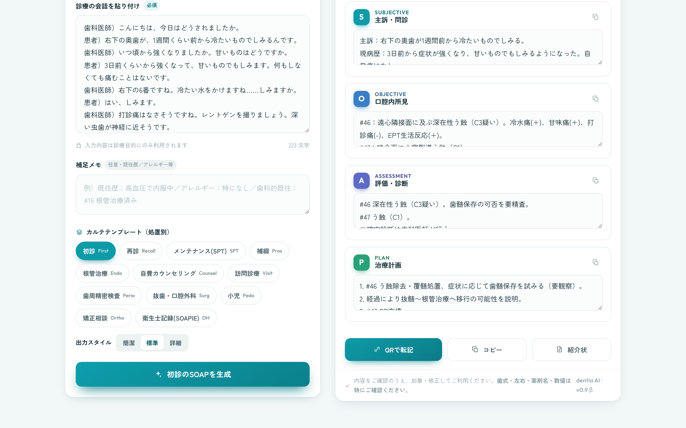
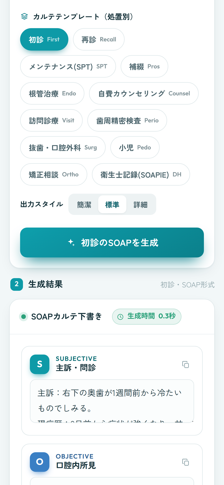
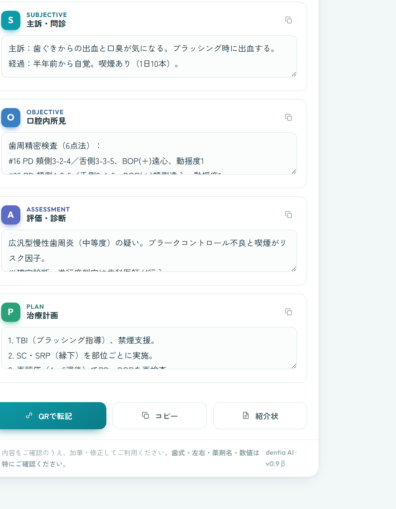
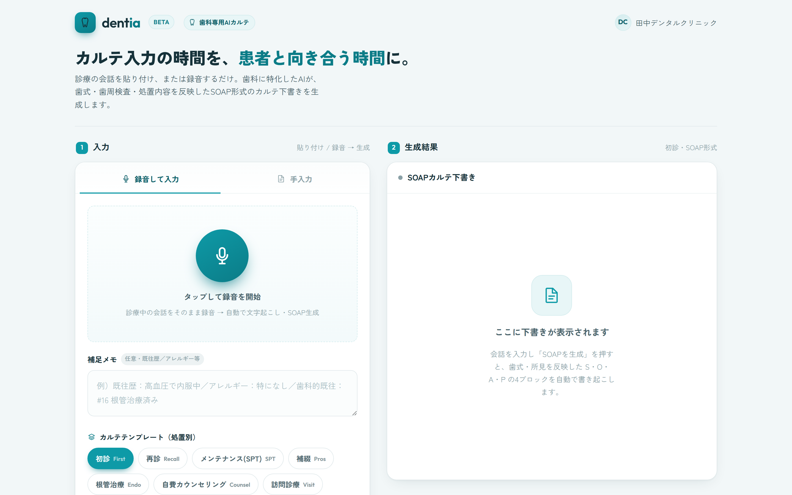
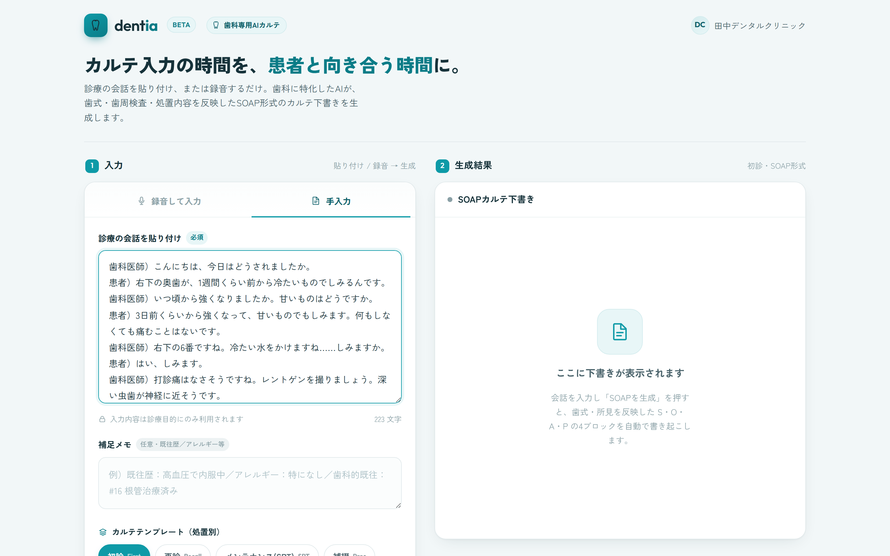
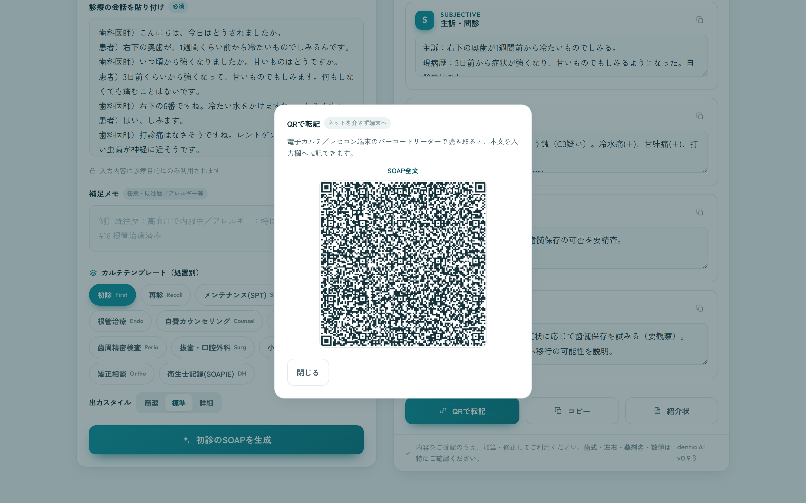
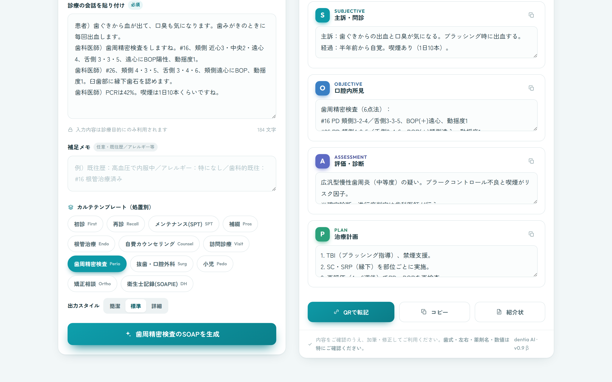
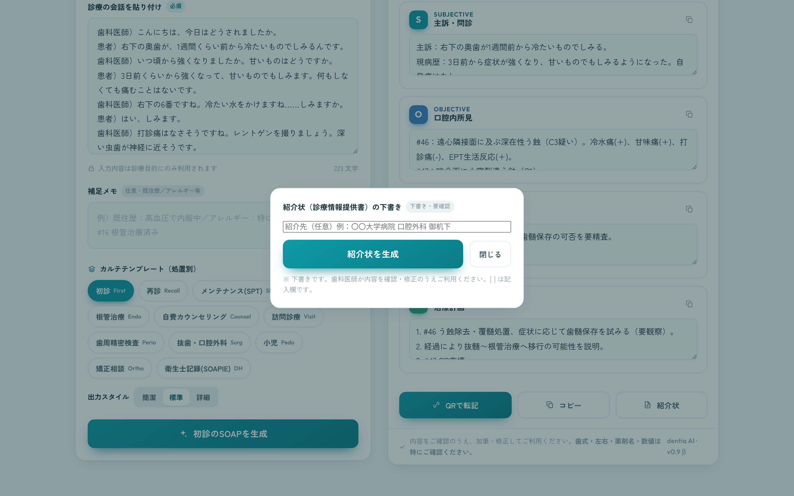

診療中の会話を録音、または会話テキストを貼り付け。

歯科語彙に最適化したAIが日本語で文字起こし。

場面別テンプレで S/O/A/P を構造化して出力。
項目別コピー・QRコードでレセコンへ転記。

C0〜C4／EPT／SRP／RCF／BOP／歯式 等の歯科用語の認識をAIにバイアス。誤変換を抑制します。
12種の処置・場面に最適化。初診の全顎ベースラインから衛生士のSOAPIEまで。出力スタイルも簡潔／標準／詳細で切替。
「#46：所見」、歯周は6点法・PCR%で構造化。レセコンの欄ごと貼り付けに強い形に。
S/O/A/Pをその場で編集、項目別コピー、QR転記、紹介状（情報提供書）の下書き生成にも対応。


| dentia（歯科特化） | 汎用の音声カルテ | |
|---|---|---|
| 歯科用語の整理 | 歯科に最適化 | 一般用語が中心 |
| 歯式単位の構造化 | あり（#46：所見） | 基本なし |
| 歯周6点法・PCR% | 構造化テキスト出力 | 基本なし |
| 場面別テンプレ | 歯科12場面 | 汎用テンプレ |
| 転記方法 | 項目別コピー＋QR | コピー／連携 |
| 提供状況 | クローズドβ | — |
| 常勤医師1名のイメージ | dentia | 医療クラーク（人） |
|---|---|---|
| 立ち上げ期間 | 短い（アカウント発行） | 採用・教育に数ヶ月 |
| 教育コスト | 基本なし | 教育期間中の人件費 |
| 稼働の安定 | 時間外メンテのみ | 休暇・急な休み・退職 |
| 記録の均一性 | テンプレで一定 | 人による差 |
| 対人業務（受付等） | ×（記録支援に特化） | ○ |
| プラン（将来イメージ・仮） | 月額 | 録音・生成 |
|---|---|---|
| β（クローズド） | 無償 | 利用上限の範囲内 |
| スモール（将来・仮） | 未定 | — |
| スタンダード（将来・仮） | 未定 | — |
| サービス名 | dentia（歯科専用 AIカルテ作成支援） |
| 提供主体 | ［ 記入 ］（現在は個人開発・歯科学生による開発） |
| 位置づけ | クローズドβ（同意の取れた医院での実地検証） |
| 技術構成 | 文字起こし・要約に外部AI（API利用）／認証・保存に Supabase（医院単位 RLS） |
| お問い合わせ | ［ メール / 連絡先を記入 ］ |
クローズドβにご協力いただける歯科医院を募集しています。
現場の声をもとに、歯科に本当に役立つカルテ作成支援へ磨き込みます。